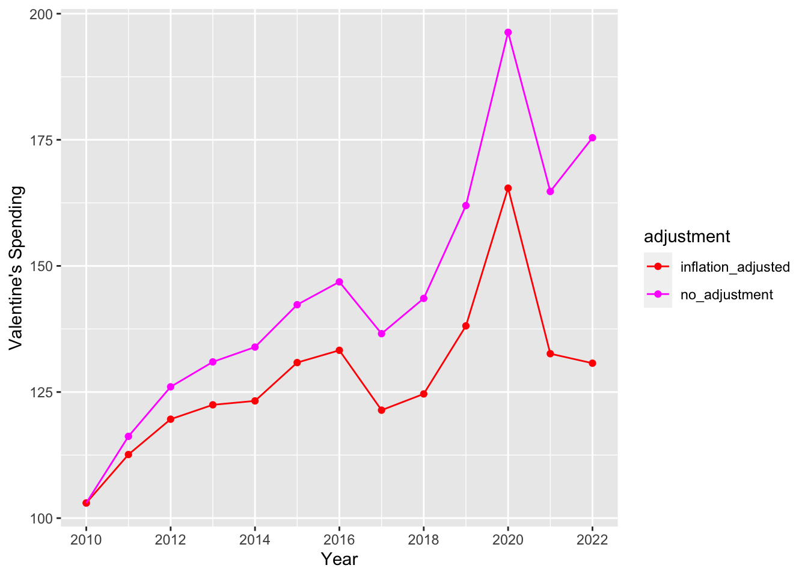
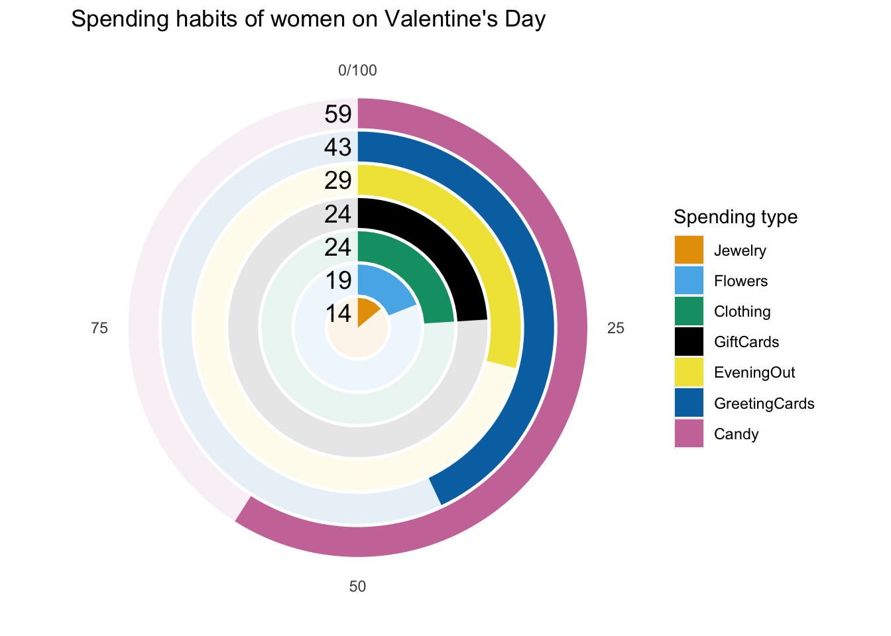
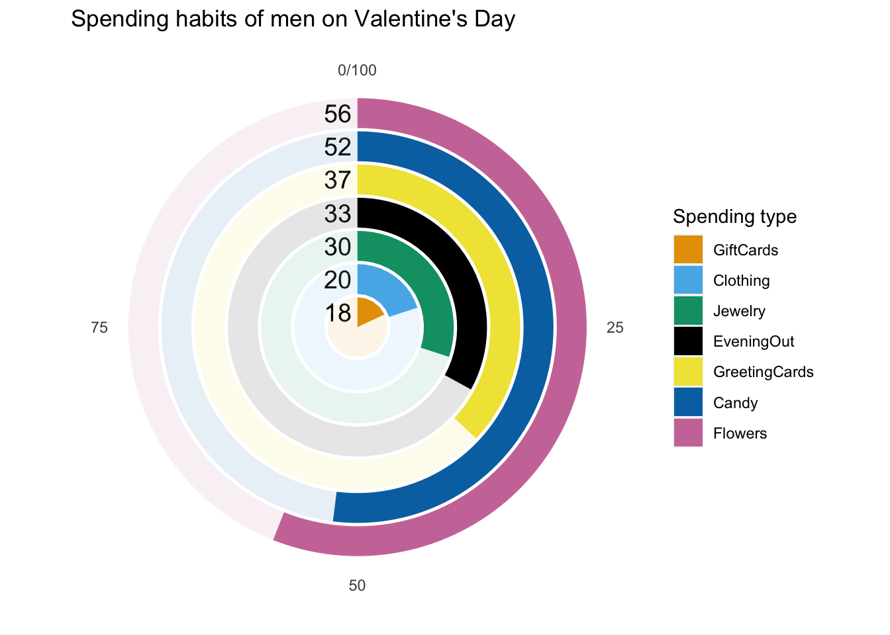

library(tidyverse) # ggplot, lubridate, dplyr, stringr, readr...
library(praise)Valentine’s Day Consumer Data
The Data
Happy Valentine’s Day! This week we’re exploring Valentine’s Day survey data. The National Retail Federation in the United States conducts surveys and has created a Valentine’s Day Data Center so you can explore the data on how consumers celebrate.
historical_spending <- readr::read_csv('https://raw.githubusercontent.com/rfordatascience/tidytuesday/master/data/2024/2024-02-13/historical_spending.csv')
gifts_age <- readr::read_csv('https://raw.githubusercontent.com/rfordatascience/tidytuesday/master/data/2024/2024-02-13/gifts_age.csv')
gifts_gender <- readr::read_csv('https://raw.githubusercontent.com/rfordatascience/tidytuesday/master/data/2024/2024-02-13/gifts_gender.csv')
inflation <- c(1, 1.032, 1.021, 1.015, 1.016, 1.001, 1.013, 1.021,
1.024, 1.018, 1.012, 1.047, 1.08)
infl_prod <- cumprod(inflation)
historical_spending <- historical_spending |>
cbind(inflation, infl_prod) |>
mutate(perperson_adj = PerPerson / infl_prod)historical_spending |>
rename(no_adjustment = PerPerson, inflation_adjusted = perperson_adj) |>
pivot_longer(cols = c("no_adjustment", "inflation_adjusted"),
values_to = "spending",
names_to = "adjustment") |>
ggplot(aes(x = Year, y = spending, color = adjustment)) +
geom_point() +
geom_line() +
ylab("Valentine's Spending") +
scale_color_manual(values = c("red", "magenta")) +
scale_x_continuous(breaks= scales::pretty_breaks())
cbp2 <- c( "#E69F00", "#56B4E9", "#009E73","#000000",
"#F0E442", "#0072B2", "#CC79A7", "#D55E00")
gifts_gender |>
filter(Gender == "Women") |>
pivot_longer(cols = Candy:GiftCards,
names_to = "type",
values_to = "percent") |>
mutate(type = fct_reorder(type, percent)) |>
mutate(not_spend = 100-percent) |>
pivot_longer(cols = percent:not_spend,
values_to = "percent",
names_to = "spend") |>
ggplot(aes(x = type, y = percent, fill = type, alpha = spend)) +
geom_bar(stat = "identity") +
geom_text(aes(label = percent, x = type, y = 100,
color = spend), size = 5, hjust = 1.2) +
#scale_alpha_manual(values = c(0,1)) +
coord_polar(theta = "y") +
scale_fill_manual(values = cbp2) +
scale_color_manual(values = c("white","black")) +
theme(panel.background = element_blank(),
axis.title = element_blank(),
axis.text.y = element_blank(),
axis.ticks.y = element_blank()) +
guides(alpha = FALSE, color = FALSE) +
labs(fill = "Spending type") +
ggtitle("Spending habits of women on Valentine's Day")
gifts_gender |>
filter(Gender == "Men") |>
pivot_longer(cols = Candy:GiftCards,
names_to = "type",
values_to = "percent") |>
mutate(type = fct_reorder(type, percent)) |>
mutate(not_spend = 100-percent) |>
pivot_longer(cols = percent:not_spend,
values_to = "percent",
names_to = "spend") |>
ggplot(aes(x = type, y = percent, fill = type, alpha = spend)) +
geom_bar(stat = "identity") +
geom_text(aes(label = percent, x = type, y = 100,
color = spend), size = 5, hjust = 1.2) +
#scale_alpha_manual(values = c(0,1)) +
coord_polar(theta = "y") +
scale_fill_manual(values = cbp2) +
scale_color_manual(values = c("white","black")) +
theme(panel.background = element_blank(),
axis.title = element_blank(),
axis.text.y = element_blank(),
axis.ticks.y = element_blank()) +
guides(alpha = FALSE, color = FALSE) +
labs(fill = "Spending type") +
ggtitle("Spending habits of men on Valentine's Day")